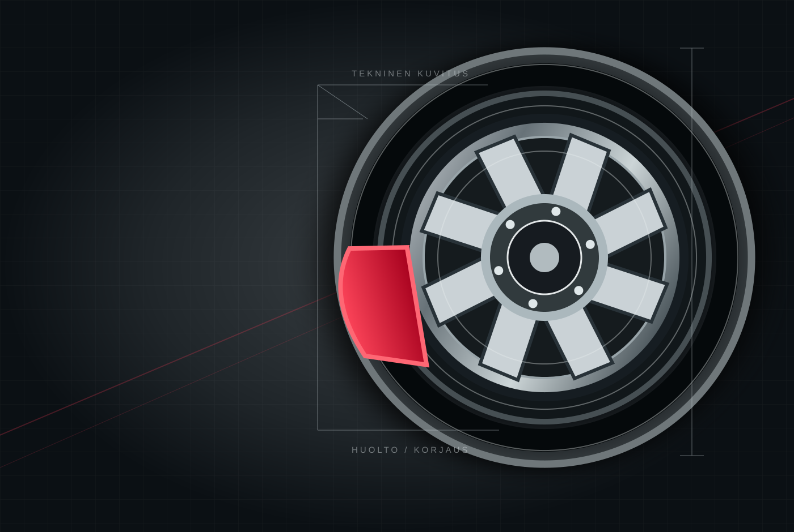

AUTOHUOLTO / KERAVA
Paikallinen
korjaamo.
Tuttu palvelu.
Räsäsen Autohuolto toimii Heisitiellä Keravalla. Huolto- ja korjauspalveluja kaikille merkeille jo 20 vuoden kokemuksella.
Löydä korjaamo02 — KORJAAMO
YRITYKSESTÄ
Autohuoltoa
oikeaan tarpeeseen.
Keravalla sijaitseva S. Räsäsen Autohuolto Oy hoitaa henkilöautojen ja matkailuautojen huollot sekä korjaukset merkistä riippumatta. Yritys kertoo yli kahden vuosikymmenen kokemuksesta.
Autofit-ketjun jäsenyys tuo yhteen merkkiriippumattomat autohuollot ja korjaamot. Räsäsen Autohuollon omien tietojen mukaan työlle ja käytettäville alkuperäisvaraosille annetaan takuu.
Katso Autofit-profiiliKERAVA / HEISITIE 420+
KAIKILLE MERKEILLE
Vuoden kokemuksella
AUTOHUOLTOKAIKILLE MERKEILLE

HUOLTO & KORJAUS
Kuvituskuva. Ei yrityksen oma kuva.
YHTEYSTIEDOT
Meille on helppo ottaa yhteyttä.
Soita korjaamolle, kysy palveluista tai tarkista saapumisohjeet.